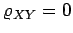

Zwei Merkmale X und Y sollen zu einer zweidimensionalen Zufallsgröße (X,Y) mit folgenden Verteilungsfunktionen zusammengefaßt werden:
Die Zufallsgrößen X und Y heißen unabhängig voneinander, wenn
gilt. Die wichtigsten Parameter einer zweidimensionalen Verteilung sind:
- 1. Mittelwerte:
-
- 2. Streuungen:
-
- 3. Kovarianz:
-
- 4. Korrelationskoeffizient:
-
Der Korrelationskoeffizient ist ein Maß für die lineare Abhängigkeit von X und Y, denn es gilt: Alle Punkte (X,Y) liegen genau dann mit der Wahrscheinlichkeit 1 auf einer Geraden, wenn ist. Wenn X und Y unabhängige Zufallsveränderliche sind, dann ist . Aus  kann man nur dann auf die Unabhängigkeit der Merkmale X und Y schließen, wenn diese einer zweidimensionalen Normalverteilung genügen, die durch die folgende Dichtefunktion definiert ist: